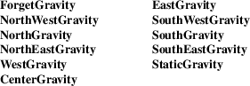
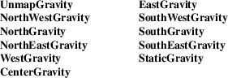

XGetWindowAttributes, XGetGeometry, XWindowAttributes − get current window attribute or geometry and current window attributes structure
|
Status XGetWindowAttributes(Display *display, Window w, XWindowAttributes *window_attributes_return); | |
|
Status XGetGeometry(Display *display, Drawable d, Window *root_return, int *x_return, int *y_return, unsigned int *width_return, unsigned int *height_return, unsigned int *border_width_return, unsigned int *depth_return); |
border_width_return
Returns the border width in pixels.
|
d |
Specifies the drawable, which can be a window or a pixmap. |
depth_return
Returns the depth of the drawable (bits per pixel for the object).
|
display |
Specifies the connection to the X server. |
root_return
Returns the root window.
|
w |
Specifies the window whose current attributes you want to obtain. |
width_return
height_return
Return the drawable’s dimensions (width and height).
window_attributes_return
Returns the specified window’s attributes in the XWindowAttributes structure.
|
x_return |
|||
|
y_return |
Return the x and y coordinates that define the location of the drawable. For a window, these coordinates specify the upper-left outer corner relative to its parent’s origin. For pixmaps, these coordinates are always zero. |
The XGetWindowAttributes function returns the current attributes for the specified window to an XWindowAttributes structure. It returns a nonzero status on success; otherwise, it returns a zero status.
XGetWindowAttributes can generate BadDrawable and BadWindow errors.
The XGetGeometry function returns the root window and the current geometry of the drawable. The geometry of the drawable includes the x and y coordinates, width and height, border width, and depth. These are described in the argument list. It is legal to pass to this function a window whose class is InputOnly. It returns a nonzero status on success; otherwise, it returns a zero status.
The XWindowAttributes structure contains:
typedef struct
{
int x, y; /* location of window */
int width, height; /* width and height of window */
int border_width; /* border width of window */
int depth; /* depth of window */
Visual *visual; /* the associated visual structure */
Window root; /* root of screen containing window */
int class; /* InputOutput, InputOnly*/
int bit_gravity; /* one of the bit gravity values */
int win_gravity; /* one of the window gravity values */
int backing_store; /* NotUseful, WhenMapped, Always */
unsigned long backing_planes; /* planes to be preserved if
possible */
unsigned long backing_pixel; /* value to be used when
restoring planes */
Bool save_under; /* boolean, should bits under be saved? */
Colormap colormap; /* color map to be associated with window
*/
Bool map_installed; /* boolean, is color map currently
installed*/
int map_state; /* IsUnmapped, IsUnviewable, IsViewable */
long all_event_masks; /* set of events all people have
interest in*/
long your_event_mask; /* my event mask */
long do_not_propagate_mask; /* set of events that should not
propagate */
Bool override_redirect; /* boolean value for
override-redirect */
Screen *screen; /* back pointer to correct screen */
} XWindowAttributes;
The x and y members are set to the upper-left outer corner relative to the parent window’s origin. The width and height members are set to the inside size of the window, not including the border. The border_width member is set to the window’s border width in pixels. The depth member is set to the depth of the window (that is, bits per pixel for the object). The visual member is a pointer to the screen’s associated Visual structure. The root member is set to the root window of the screen containing the window. The class member is set to the window’s class and can be either InputOutput or InputOnly.
The bit_gravity member is set to the window’s bit gravity and can be one of the following:

The win_gravity member is set to the window’s window gravity and can be one of the following:

For additional information on gravity, see section 3.3.
The backing_store member is set to indicate how the X server should maintain the contents of a window and can be WhenMapped, Always, or NotUseful. The backing_planes member is set to indicate (with bits set to 1) which bit planes of the window hold dynamic data that must be preserved in backing_stores and during save_unders. The backing_pixel member is set to indicate what values to use for planes not set in backing_planes.
The save_under member is set to True or False. The colormap member is set to the colormap for the specified window and can be a colormap ID or None. The map_installed member is set to indicate whether the colormap is currently installed and can be True or False. The map_state member is set to indicate the state of the window and can be IsUnmapped, IsUnviewable, or IsViewable. IsUnviewable is used if the window is mapped but some ancestor is unmapped.
The all_event_masks member is set to the bitwise inclusive OR of all event masks selected on the window by all clients. The your_event_mask member is set to the bitwise inclusive OR of all event masks selected by the querying client. The do_not_propagate_mask member is set to the bitwise inclusive OR of the set of events that should not propagate.
The override_redirect member is set to indicate whether this window overrides structure control facilities and can be True or False. Window manager clients should ignore the window if this member is True.
The screen member is set to a screen pointer that gives you a back pointer to the correct screen. This makes it easier to obtain the screen information without having to loop over the root window fields to see which field matches.
BadDrawable
A value for a Drawable argument does not name a defined Window or Pixmap.
|
BadWindow |
A value for a Window argument does not name a defined Window. |
XQueryPointer(3),
XQueryTree(3)
Xlib − C Language X Interface